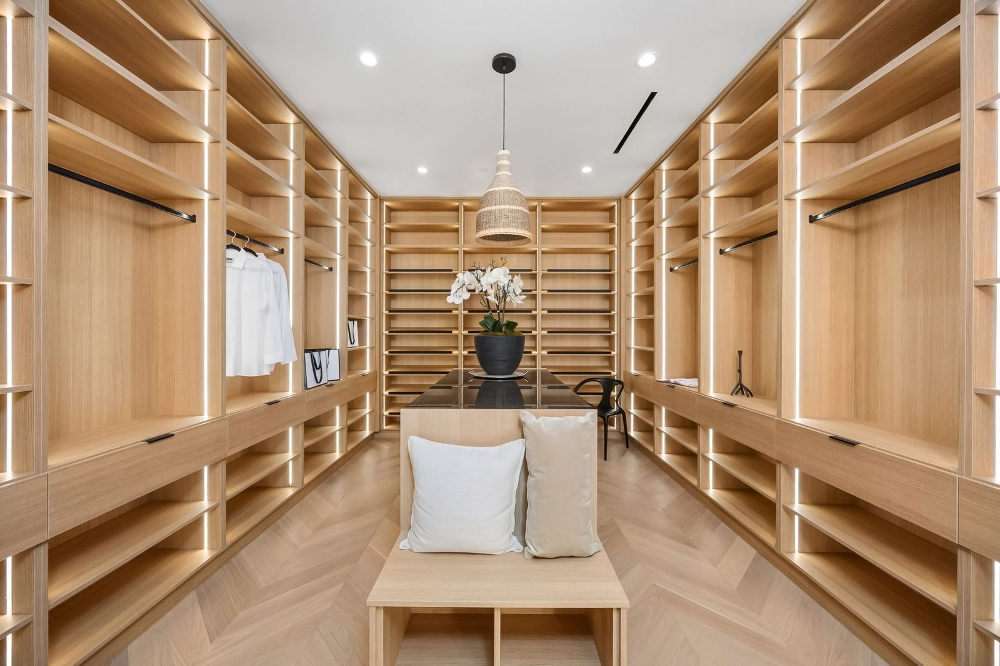
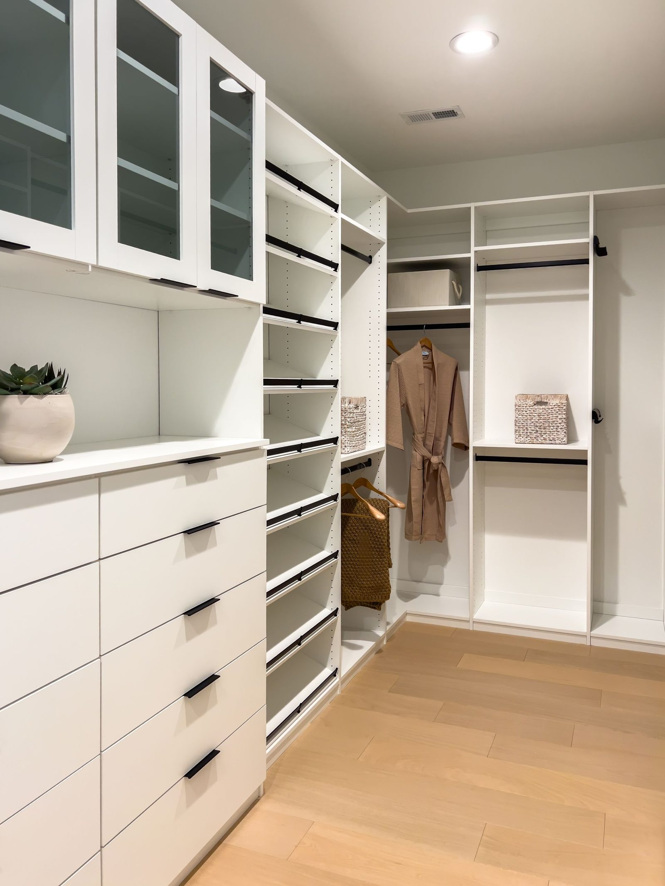

Count linear feet, not square feet
A 6-foot reach-in gives you roughly 12 linear feet of hanging if you double-hang it. A 6×8 walk-in with cabinetry on two walls gives you about 14, for three times the floor area. The walk-in wins, but not by nearly as much as its footprint suggests, because you have to stand somewhere.
Where the reach-in wins
- Every inch is reachable from outside. Nothing is behind you.
- No floor space is lost to standing room.
- Doors can be removed entirely and the whole thing becomes a built-in wardrobe wall.
- It is roughly half the price for similar hanging capacity.
Where the walk-in wins
- Islands. You cannot put a drawer island in a reach-in, and an island is the single best storage-per-dollar item we build.
- Full-height mirrors and a place to actually dress.
- Seating, which matters more than people expect.
- Corner returns, which turn dead corners into shoe walls.
The minimum that actually works
A walk-in needs 7 feet of width before it stops feeling like a corridor: 24 inches of cabinetry on each side plus 36 inches to stand and turn. Below that, you have built a reach-in with a door you have to walk through.
If your room is under 7 feet wide, we will usually tell you to leave it as a reach-in and spend the difference on better internals.

Count hanging inches, not square feet
Square footage is the wrong measure, because a walk-in spends a large part of its floor on standing room and a reach-in spends none. The number that decides how much a closet actually holds is linear inches of hanging rod plus linear feet of usable shelf.
Take a plain 6-foot reach-in, 72 inches wide and 24 inches deep, with one rod and one shelf. That is 72 inches of hanging. Fit it properly with double hanging across two thirds and a drawer tower in the rest, and you get roughly 96 inches of hanging, a shelf over all of it and four drawers. From the same box, with no building work.
| Room | Typical hanging, built properly |
|---|---|
| 6' reach-in | About 96" of rod, plus drawers and a top shelf |
| 8' reach-in | About 128" of rod, or 96" plus a full shoe wall |
| 7'x7' walk-in | About 170" across two walls, plus a return |
| 8'x10' walk-in | About 230" across three walls, plus room for an island |
A walk-in wins on total capacity once the room is genuinely big. It does not win automatically, and a narrow walk-in loses badly, because the standing lane costs you a whole wall's worth of cabinetry and gives nothing back.

The doors change the answer
This is the part most comparisons skip, and it is the part that decides whether a reach-in is pleasant to use. A reach-in has doors; a walk-in usually has one door and open cabinetry inside.
Bypass sliders are the worst case: only half the opening is ever open, so you are always sliding a door across to reach something. Bi-folds give you nearly the whole opening but their leaves stack over about five inches at each end, which is exactly where you would want a drawer front. Hinged doors give you everything, if the bedroom has room for them to swing.
Our 3D builder accounts for all of this: pick your door type and it changes the usable depth and warns you about any section whose fronts will not open. It is worth doing before you decide between the two kinds of room.
When converting a reach-in is worth it
Knocking a reach-in through into a spare bedroom to make a walk-in is a real project, and the honest answer is that it is worth it less often than people hope. The build cost is not the cabinetry, it is the framing, the drywall, the electrics and the flooring.
It makes sense when the room next door is genuinely spare, when the new closet gets to be at least seven feet in its short direction, and when you are already doing other work in that part of the house. It does not make sense to lose a bedroom to gain a closet, in resale terms or in living terms.
Our usual advice: spend the conversion budget on the inside of the reach-in you already have. A fully fitted reach-in costs a fraction of a conversion and holds more than most people's walk-ins.